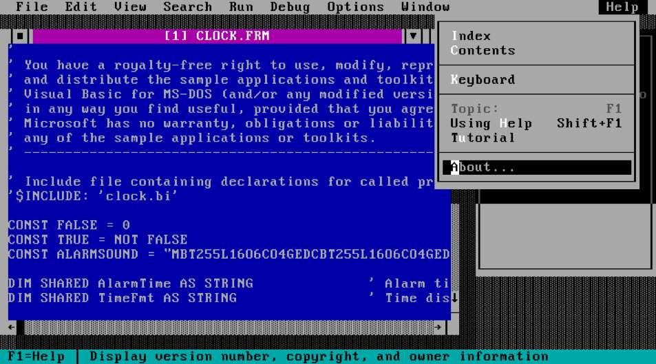
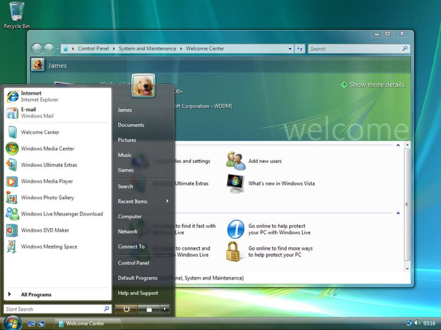
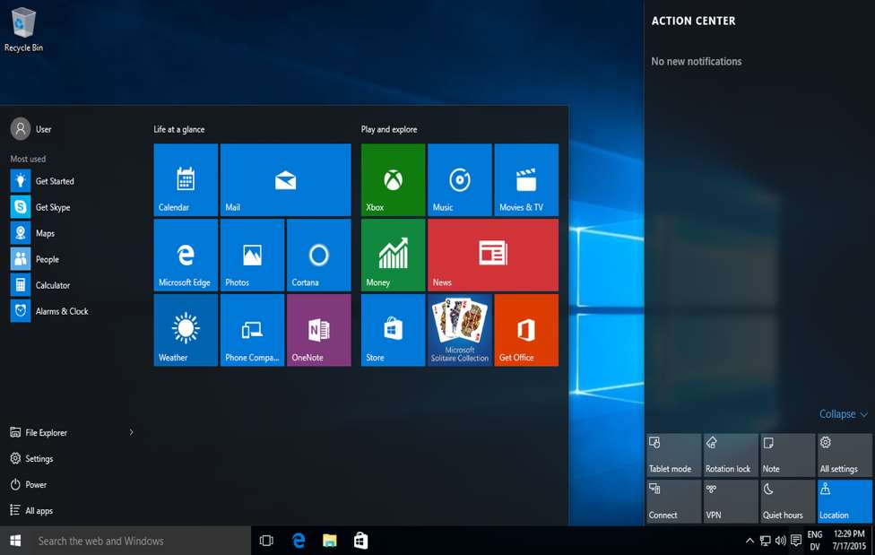
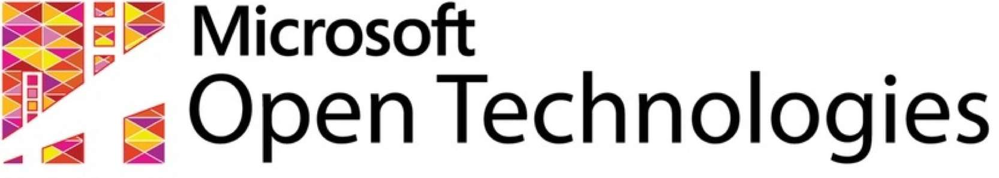

نگاهی به رابطه مایکروسافت و متنباز
دیروز، امروز و فردا
اول دفتر
- این یک گزارش است نه یک دفاعیه
- من یک گزارشگر هستم نه یک وکیل!
- نگاه و تحلیل دیروز و امروز دشوار نیس
ت، پیشبینی بینقص فردا غیرممکن است
مایکروسافت
- چهل سال پیش توسط بیل گیتس و پل آلن بنا نهاده شده
- بیشتر به خاطر نقشآفرینی در دنیای نرمافزار شناخته میشود
- در حوزههای سختافزاری مانند گوشی و کنسولهای بازی، و همچنین خدمات اینترنتی مانند تماس آنلاین (اسکایپ) و ایمیل فعال است
- با ۹۳ میلیارد دلار درآمد در سال ۲۰۱۵ که ۱۸ میلیارد آن سود بوده است، از پولدارترین شرکتهای حوزه فناوری دنیاست
- بیش از ۵۷ هزار کارمند در سراسر دنیا دارد
دوران مدیریتی مایکروسافت
- بیل گیتس تا ژانویه سال ۲۰۰۰
- استیو بالمر از ۲۰۰۰ تا ۲۰۱۴
- ساتیا نادلا از ۲۰۱۴ تا کنون
آنچه در دوران گیتس گذشت

- شروع مایکروسافت
- سیستم عامل مایکروسافت
- ویژوال بیسیک
- مایکروسافت آفیس
- دعواهای حقوقی
- اینترنت اکسپلورر
آنچه در دوران بالمر گذشت

- ویندوز ME
- ویندوز XP
- دات نت
- ویندوز ویستا
- ویندوز ۷
- ویندوز ۸ و ۸.۱
- کدپلکس
- ویندوز لایو
-
خرید اسکایپ و نوکیا
از سخنان حضرتش
-
There's no chance that the iPhone is going to get any significant market share. No chance
-
Steve Ballmer referred to the free software Linux kernel as a "cancer that attaches itself in an intellectual property sense to everything it touches"
-
At some point in the conversation Mr. Ballmer said: "Just tell me it's not Google." I told him it was Google. At that point, Mr. Ballmer picked up a chair and threw it across the room hitting a table in his office. Mr. Ballmer then said:
"F****** Eric Schmidt is a f****** p****. I'm going to f****** bury that guy, I have done it before, and I will do it again. I'm going to f****** kill Google."
آنچه در دوران ناتلا میگذرد

- ویژوال استدیو کامیونیتی
- ویژوال استدویو کد
- ویندوز آژور
- ویندوز ۱۰
Microsoft Open Technoliges
